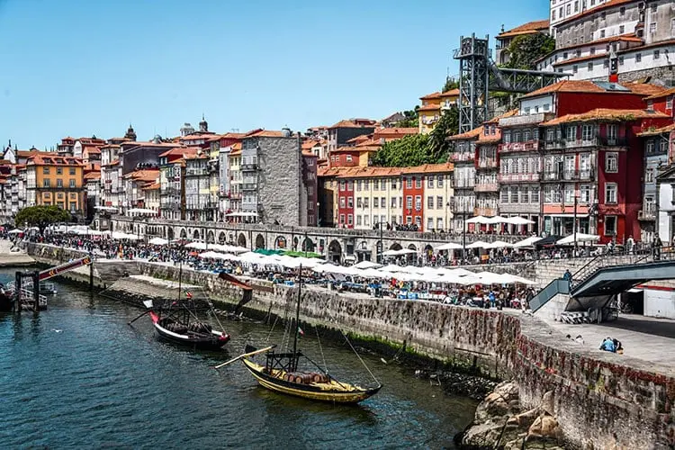

Meu nome é André Palhares de Mendonça Slessarencko. Tenho 25 anos de idade e nasci em Passo Fundo, Rio Grande do Sul, onde ainda resido até os dias de hoje. Sou um amante das artes, principalmente Renascimento e Barroco. Posso dizer que Bach foi o grande responável por abrir a porta para os interesses que venho cultivando atualmente.
| Itália | |
| Espanha | |
| Portugal |  |